Escape from the Power Plant
Half-Life 2 Side Level and Electrical-Circuit Puzzle Design
Project at a Glance
My Core Work
- Expanded a conductivity rule into puzzles about distance, media, order, and combination.
- Used environmental staging and consistent visual feedback for text-free teaching.
- Structured the difficulty curve as learn, reinforce, break through, and combine.
Project Overview
This Half-Life 2 side level was created as an exercise in puzzle design: using environmental staging to imply solutions, establishing conveyance to guide the player, communicating information through the initial layout, and reusing limited resources across multiple puzzles. The core mechanic is similar to the Lightning Temple in The Legend of Zelda: the player connects circuits with conductive metal blocks and ultimately escapes the factory.
Level Layout
The layout follows the order in which the electrical-circuit mechanic is learned. Combat zones, puzzle rooms, upper and lower floors, and recoverable resources are arranged along one continuous progression. The player first observes the goal, then learns the rules, and finally carries resources used earlier into later puzzles.
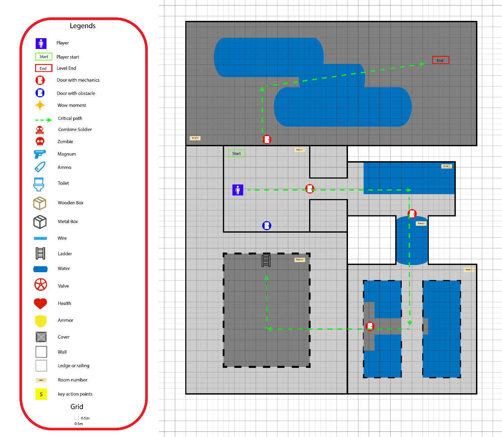


Goal 1: Mechanic Design
Selecting a Strong Mechanic
Communication: As a Half-Life 2 derivative level, the mechanic must fit the existing world. Half-Life 2 includes extensive physics simulation, so the mechanic should connect to real-world physical phenomena and align with player intuition. Among several candidates, an electrical-circuit puzzle—although absent from the original game—fit this world best.
Elegance: The basic action is simply connecting two sparking circuit endpoints. The action is easy to understand and establishes the rule quickly during the opening lesson.
Emergence: The mechanic also needs enough potential to support additional play. Connecting two objects can develop into puzzles involving distance, conductive media, matching relationships, sequence, and timing.
Exploring the Mechanic's Potential
Logic gates: If a puzzle currently uses an AND relationship, consider whether OR or NOT can also become part of the gameplay.
Time and space: Limit available resources through distance or time so the same connection rule produces new solutions.
Order and quantity: Explore what happens when multiple circuits appear at once, and how the number and order of connections change the outcome.
Designing the Setting Around the Mechanic
Narrative: Why does the player use this mechanic in this location, and why must the task be completed?
Player intuition: The environment must clearly distinguish objects that can be used from objects that are only part of the scenery.
Atmosphere: Whether the mechanic creates tension or relaxation affects the arrangement of space and pacing.
Environment art: The environment should support the mechanic and story, but above all it must not interfere with the puzzle or include objects that appear interactive but are not.
Goal 2: Puzzle Design
Puzzle Teaching Sequence and Level Planning
I divided the learning sequence into four steps: A. the player conducts electricity directly with a cable; B. the player uses water as a conductor; C. the player uses water to connect different cables and learns the color-matching relationship; D. the player completes the level by connecting circuits in the correct order. The sequence of learn, reinforce, break through, and combine raises difficulty one layer at a time instead of presenting several rules simultaneously.
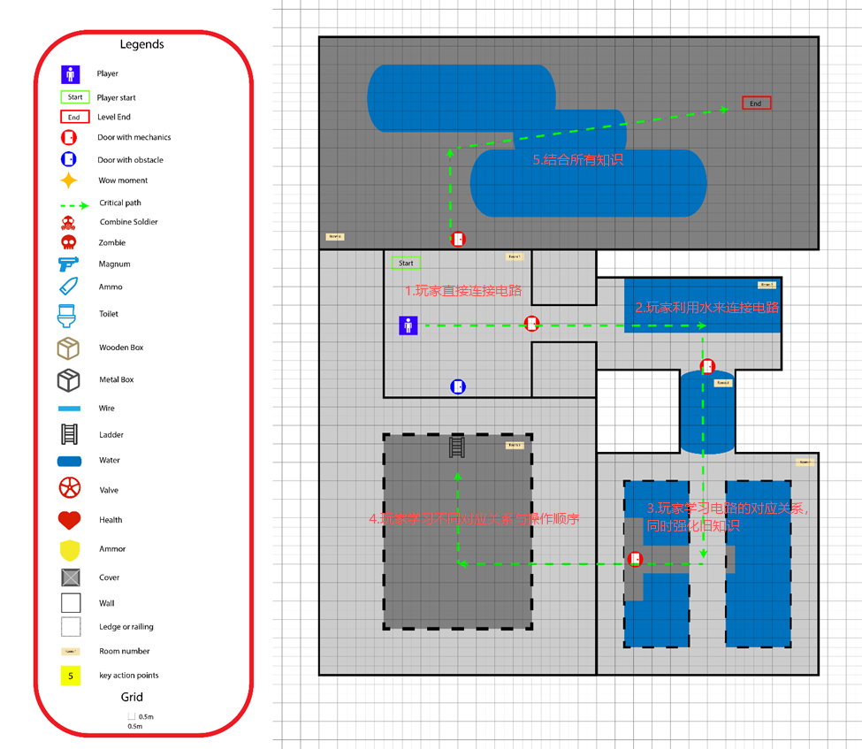
Foreseeable Goals and Environmental Communication
At the beginning of the level, a cutscene presents the final goal: two sparking blocks are connected, a green light indicates a complete circuit, the factory gate remains open, and enemies patrol below. Before taking control, the player has already seen the relationship between the mechanic, feedback, goal, and danger.


To communicate that water conducts electricity, I embedded the lesson in an environmental event. When the player approaches the first cable, a zombie charges forward and is electrocuted by the sparking water. The rule is demonstrated directly through action rather than explained with text.
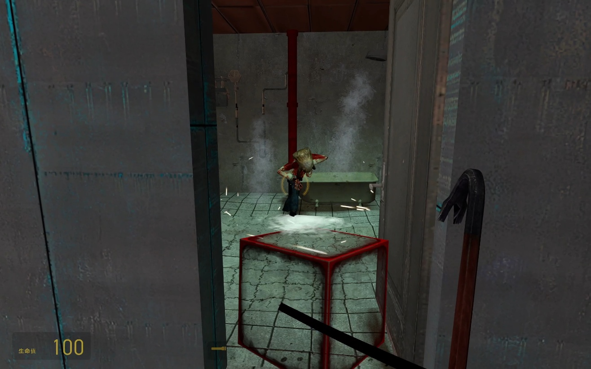
A red light and a closed gate mark the current puzzle objective. Later puzzles preserve this visual language: whenever the player sees a red light, they know that the location still needs power.
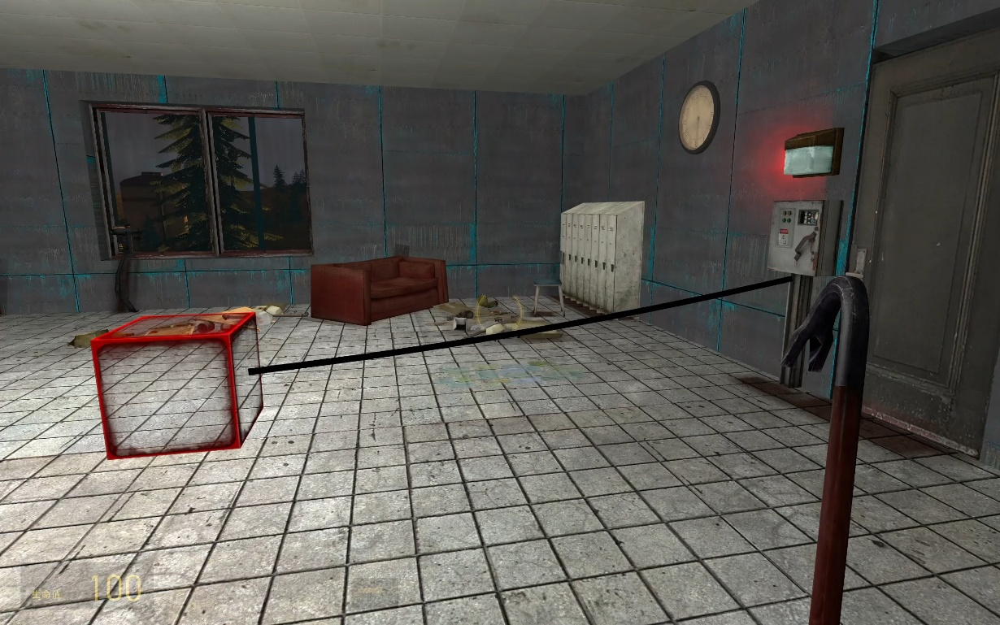
Mandatory Teaching
If a basic interaction must be fully understood, it needs to become a requirement for progress. To teach that wooden crates can be moved, I block the route with a crate that the player must relocate. Similarly, the player must destroy wooden boards to move forward, naturally learning that boards are breakable.

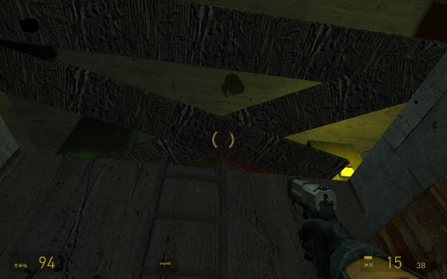

Consistent Conveyance
I keep conveyance consistent throughout the level: green means that a circuit is powered, red means the location still needs power, and electrical sparks always indicate danger and damage. When later puzzles become more complex, the player does not need to reinterpret the basic visual language.
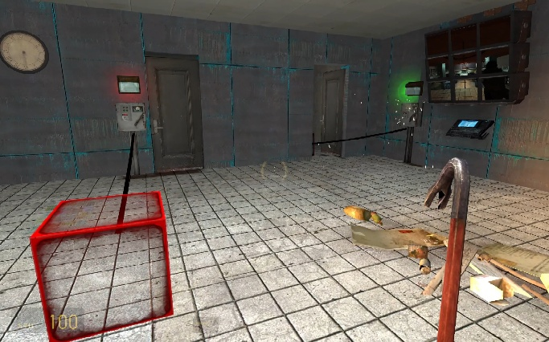

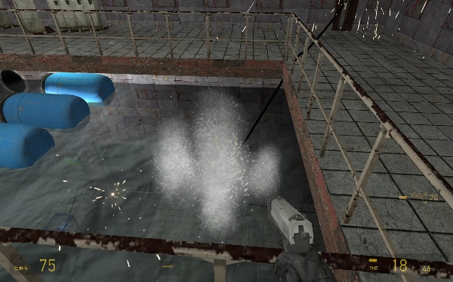
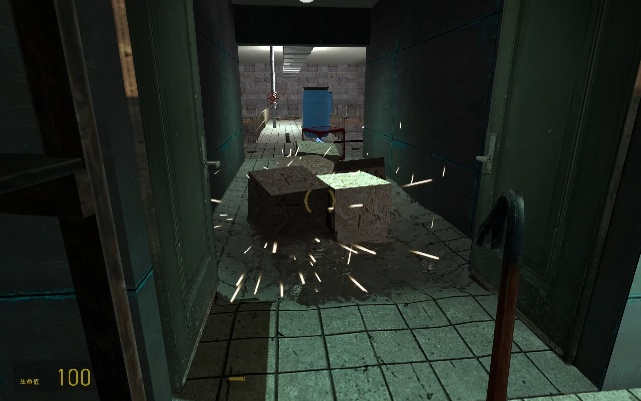
Productive Misleading States
The purpose of a misleading state is not to add arbitrary difficulty, but to prompt logical thought and communicate a deeper layer of the mechanic. I wanted the player to understand that blue cables must connect to blue cables and red cables to red cables before current can pass. I therefore show a red cable connected to a blue cable while the light remains red. The basic action appears complete, but the expected feedback is absent, leading the player to consider color correspondence.
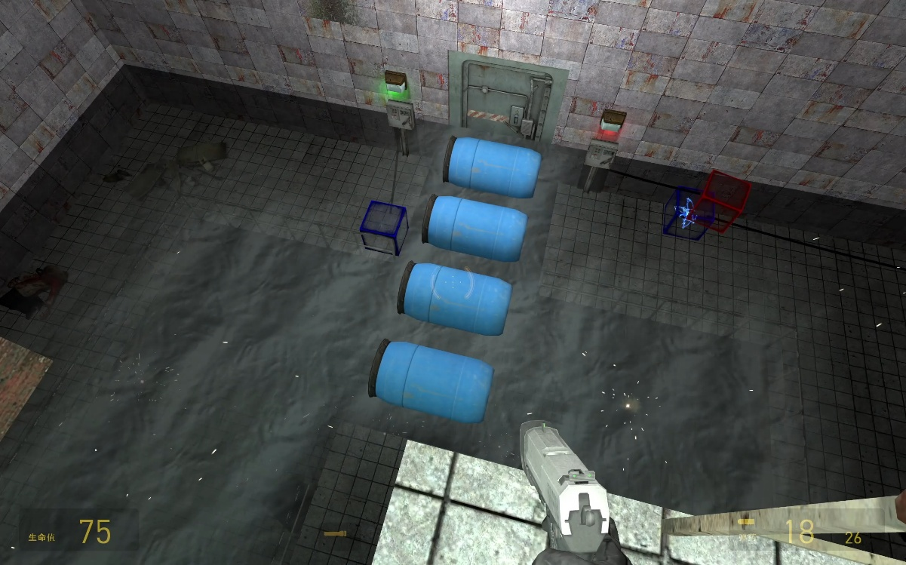
The player has already learned that electrified water causes damage, but the level then requires crossing it. The solution depends on recalling another lesson: wooden crates can be moved and used as stepping stones to avoid the water. The new puzzle does not introduce an unrelated mechanic; it combines rules that have already been taught.
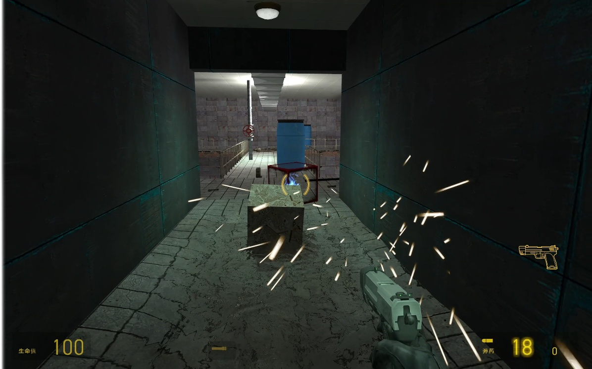
Nested Lock-and-Key Structure and Resource Reuse
Nested lock-and-key structures are common in puzzle levels. In a simple example, the player cannot solve the final puzzle directly. They have one Key A and two Lock A gates. Key A must first be used to obtain Key B; Key B opens Lock B, which releases Key A so it can open the second Lock A. The core idea is the gradual release of constrained resources.
In my level, the player needs to carry a crate across an electrified pool encountered earlier. However, opening the gate has electrified water that was previously safe. The player must first cut the power and close the gate, retrieve the crate, and then restore power to reopen the gate. Two previously separate puzzles become one complete level through a shared set of resources.


In the final puzzle, the player discovers that the red cable is always too short. I use the vertical relationship between spaces, a broken pipe in the first puzzle, and a leaking ceiling below to communicate that the power source linking the first and second puzzles is no longer needed. It can be recovered and used in the fourth puzzle. At this point, the puzzles are no longer isolated rooms; resource recovery connects them completely. Reusing existing resources to solve different problems reveals the mechanic's full potential.
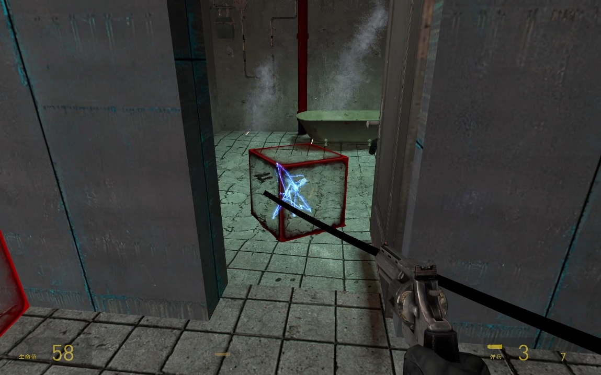

False Assumptions
A false assumption can break established thinking and introduce a deeper layer of the mechanic. The first puzzle teaches that connecting two blocks completes a circuit. The second puzzle then limits cable length so the player cannot connect the blocks directly, no matter how they try. A pool in the center of the room encourages the player to reconsider what they know and realize that placing both blocks in the water allows the water to act as a conductive medium and extend the connection distance.


Level Gallery
Final in-game views are shown below. Click an image to view the full-size version.